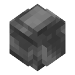
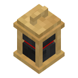
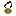
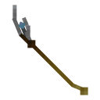
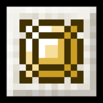

Power Stone
Scaling damage, beams, rockets and meteor storms.
- Found in

Orb- Location
- Morag Temple (Morag)
- Abilities
- 11, including Energy Blast, Knockback Resistance, Power Blast, Power Levels 1 to 11, Damage Control
Space Stone
Portals, telekinesis and black holes.
- Found in
- Tesseract
- Location
- Norse Village (Overworld)
- Abilities
- 14, including Force Field, Jump Teleport, Teleport GUI, Telekinesis, Spatial Lock
Reality Stone
Rewrite blocks, change size, weather and visibility.
- Found in

Aether- Location
- Aether Chamber (Svartalfheim)
- Abilities
- 4, including Block Saving, Size Changing, Invisibility, Change the Weather
Soul Stone
Souls, the Soulworld and near-immortality.
- Found in
- Traded for Best Friend's Soul
- Location
- Vormir's Edge (Vormir)
- Abilities
- 16, including Soul Storage, Soul Heal, Soul Drain, Glow, Locate Entity Command
Time Stone
Speed up, slow down or freeze the whole world.
- Found in

Eye of Agamotto- Location
- Sanctum Sanctorum (Overworld)
- Abilities
- 7, including Fast Forward Daylight Cycle, Stop Projectile, Time Command, Daylight Cycle Toggle, Slow Time
Mind Stone
Flight, illusions, mind reading and disguises.
- Found in

Scepter- Location
- Sanctuary (The End)
- Abilities
- 12, including Pacify, Flight, Flight Toggle, Intangibility, Recipes
Where a stone's power comes from#
Each stone is a Palladium power: infinity:, infinity:, infinity:,
infinity:, infinity: and infinity:. You have it whenever one of these is true:
| Source | Stones | Notes |
|---|---|---|
| Holding the stone itself (either hand) | All six | The Power Stone hurts you if you hold it like this. |
| Holding its container (either hand) | The Orb doesn't give you the Power Stone's power. The Eye only does while the stone is in it. | |
| Wearing the Eye of Agamotto | Time | Chest slot or  Curios necklace, with the stone in it. |
| Curios head slot | All six | Needs Curios. |
| Infinity Gauntlet or a custom gauntlet | Every stone in it | The Infinity Gauntlet: off hand or Curios hands slot only. A custom gauntlet: wherever it is set to be worn. |
| Cosmi-Rod with the stone in its socket | Any one stone | Held in either hand. |
Unlocked abilities are saved on you, not on the stone. If you lose the stone you lose the power, and when you get it back your unlocks are still there. Some abilities, like flight, also check where the stone is coming from when you use them.
Abilities that need more than one stone#
| Ability | Stones |
|---|---|
| Black Hole | Power Stone Space Stone |
| Meteor Storm | Power Stone Space Stone |
| Power level 11 counting as full power (infinite damage, rainbow Power Blast) | All six |
| Immortality | All six |
| The Snap and Destroy Stones | All six, in a gauntlet |
All six in your gauntlet also gets you the Six Stones, One Gauntlet advancement.
Things every stone does#
- On the ground a stone lies still. It can't be destroyed, burnt, blown up or despawn. Right-click to pick it up.
- Never lost to the void: a stone that falls out of the world (or a container, gauntlet or Cosmi-Rod holding one) reappears at a random spot on the Overworld's surface within 20,000 blocks of spawn, and the whole server is told the coordinates.
- No copies: while a player is carrying a stone, any copy of it on the ground disappears.